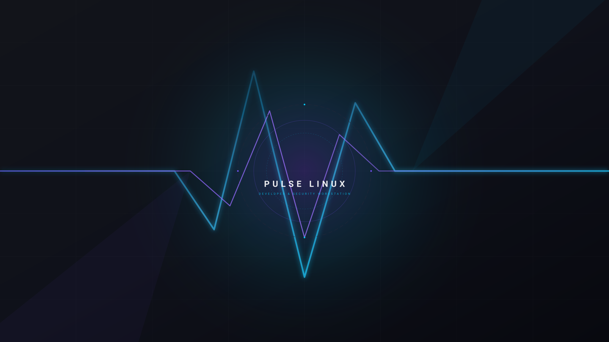
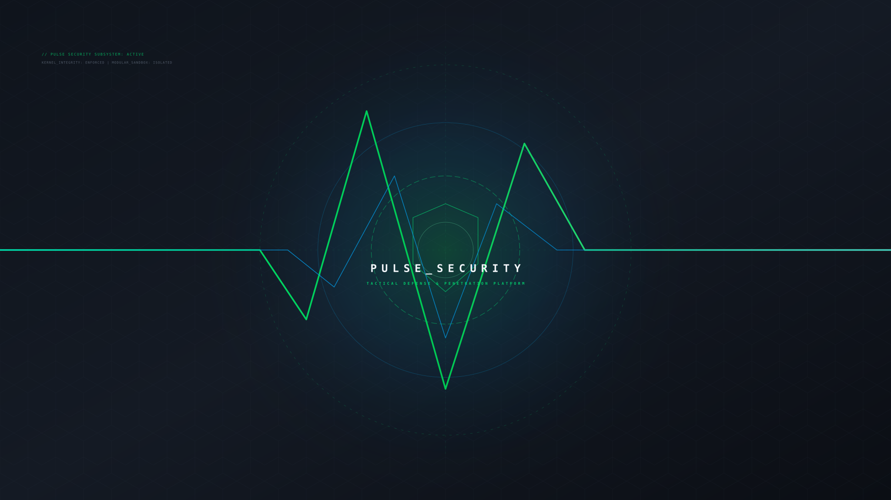

Designed from first principles to balance ergonomic developer clarity and high-aesthetic cyberpunk presence. All vector wallpapers are scalable to 8K without loss of quality.
Deep Void Charcoal backdrop with Electric Violet and Cyber Cyan glowing circuit traces.

Crisp pure slate background paired with luminous cyan gradients, optimized for bright rooms and daytime writing.

Retro-futuristic perspective grid bathed in radiant neon magenta, electric cyan, and deep ultraviolet glows.

Pitch black 0% RGB emission background for OLED displays, saving battery and eliminating eye fatigue.

Tactical dark gunmetal gray designed for multi-hour security auditing, network monitoring, and hex inspection.
